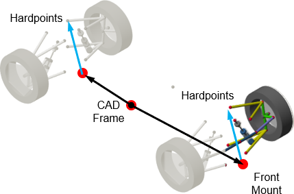
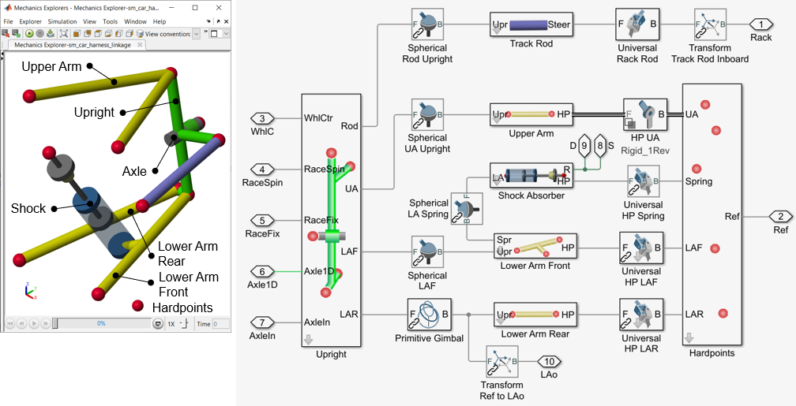
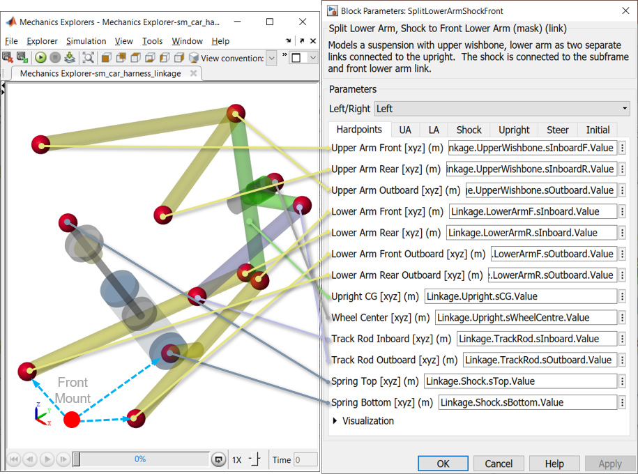

Split Lower Arm, Shock to Front
Home > Suspensions >
This subsystem models a double-wishbone suspension for one corner of the vehicle (front or rear, left or right).
Contents
Overview
The suspension is parameterized relative to a single reference point for the axle. It models the linkage for the left or right side. The left or right side is set by a dropdown parameter.

Parts

Hardpoints
Context
The diagram below shows where the hardpoints are located. All hardpoints for the suspension are defined relative to hardpoint front mount.

Implementation Details
- Left/Right Mirroring The values entered in the dialog box are assumed to be on the left side. You can mirror the hardpoints to the right side by selecting "Right" from the Left/Right dropdown. The sign is reversed on the relevant y-values via a parameter defined in the mask initialization.
- Linkage Definition Linkage lengths are defined by the locations of the hardpoints, which are defined relative to a reference point for the front/rear axle. The mass and radius are also specified by parameters, and the inertia is calculated based on those quantities.
- Initial Positions and Speeds Suspension Position: The initial position of the suspension is defined by the locations of the hardpoints, which includes the initial extension of the shock absorber. The initial force provided by the shock absorber is specified in the springs and dampers subsystem.
Wheel Speed: The initial speed of the wheel is specified within the suspension, as the joint defining the wheel axial degree of freedom is in this subsystem.
Key Components
Testrigs
- Suspension Motion Testrig
- Suspension Hardpoints: Model, Documentation